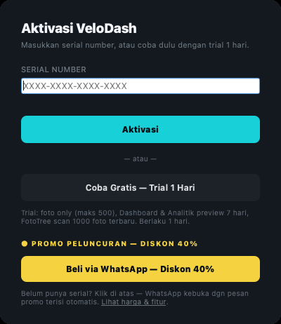
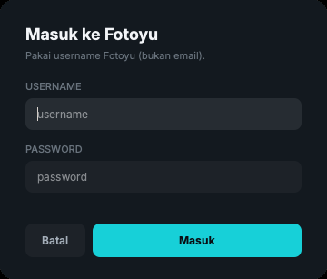
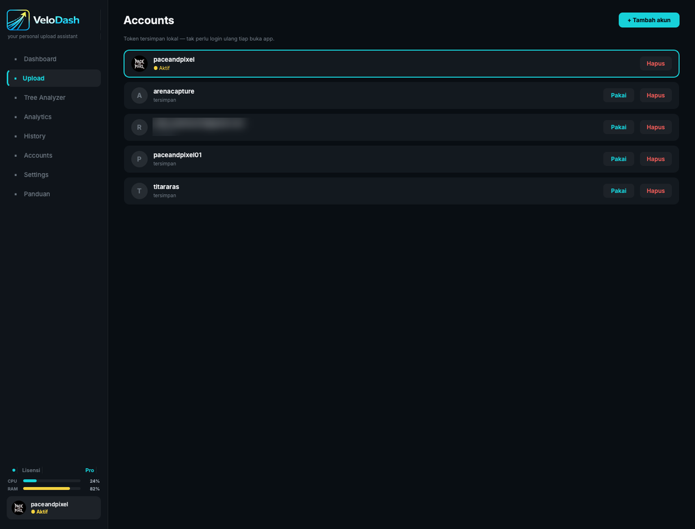
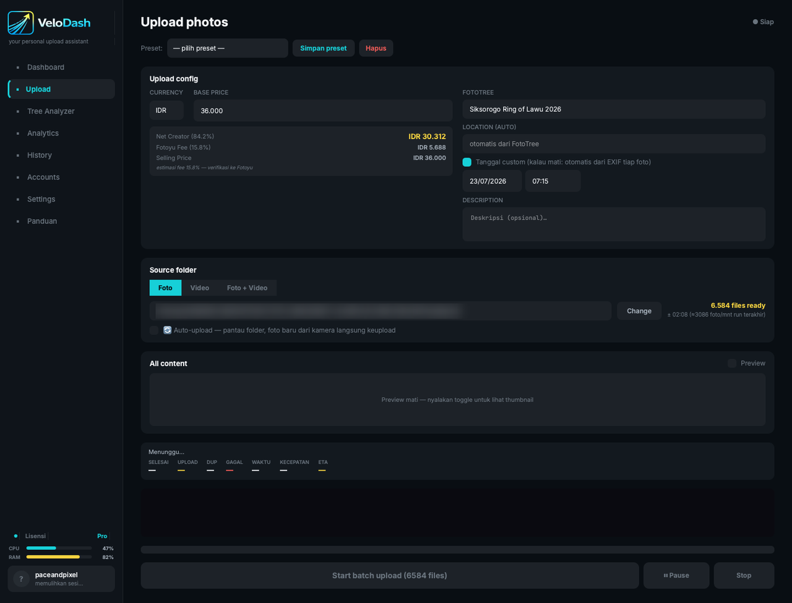
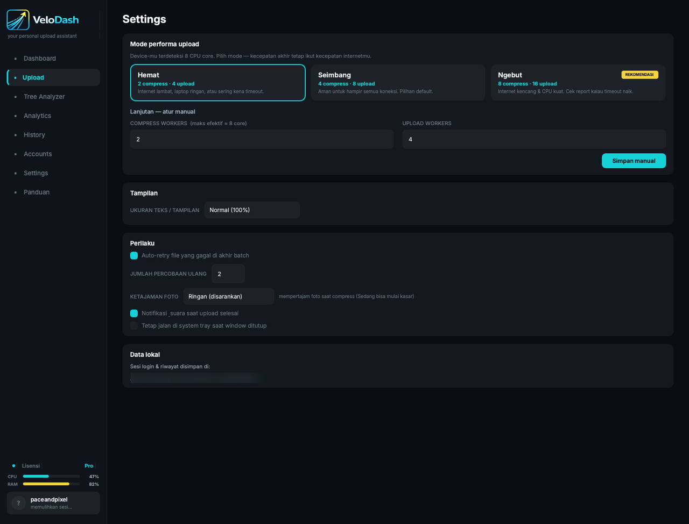
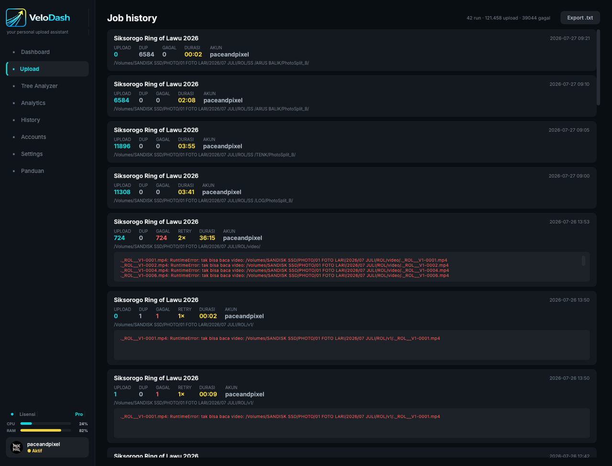
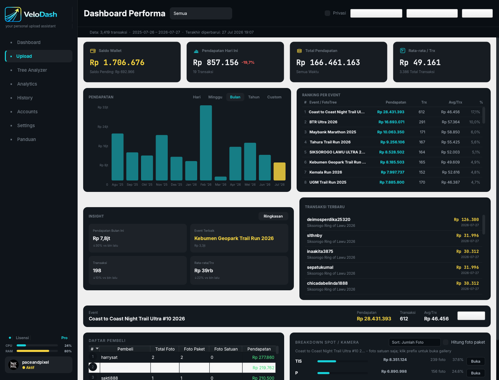
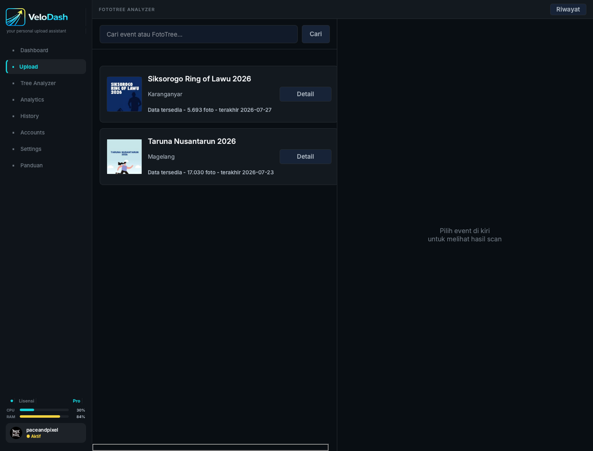
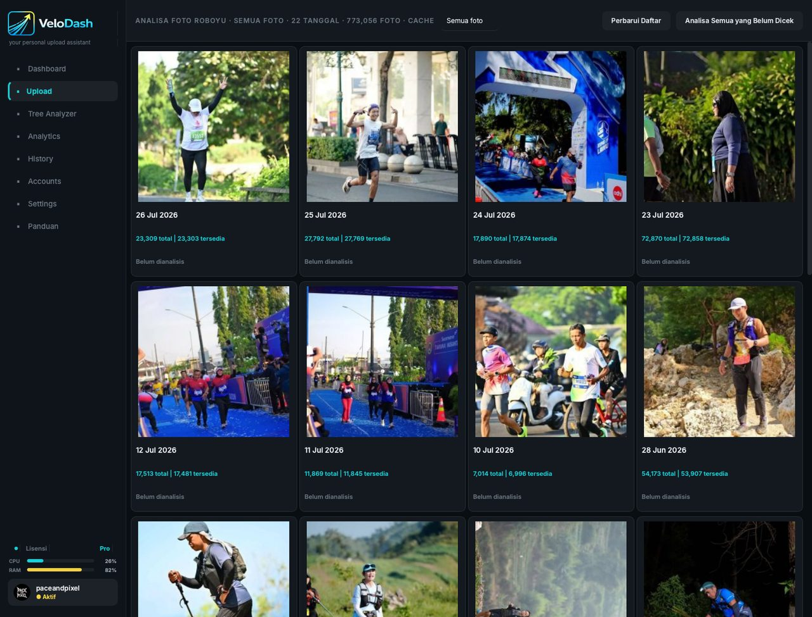

Install VeloDash
VeloDash adalah aplikasi desktop — tidak perlu Chrome, tidak perlu extension. Sekali install, jalan sendiri.
Jalankan installer
Buka file VeloDash-Setup.exe → Next sampai selesai. VeloDash muncul di Start Menu.
Seret ke Applications
Buka file .dmg, seret ikon VeloDash ke folder Applications, lalu buka dari Launchpad.
Windows: kalau muncul “Windows protected your PC”, klik More info → Run anyway.
macOS: kalau muncul “tidak dapat dibuka”, klik kanan ikon VeloDash → Open → Open. Atau buka System Settings → Privacy & Security → tombol Open Anyway.
Aktivasi serial, atau coba trial dulu
Begitu aplikasi dibuka pertama kali, kamu diminta mengaktifkan lisensi. Ada tiga pilihan di layar ini.

- Punya serial? Tempel di kolom
XXXX-XXXX-XXXX-XXXXlalu klik Aktivasi. Serial dikirim admin lewat WhatsApp setelah pembayaran. - Belum yakin? Klik Coba Gratis — Trial 1 Hari. Trial dibatasi: foto saja (maks 500), tanpa video, dan Dashboard/Analytics hanya preview 7 hari terakhir.
- Mau beli sekarang? Klik tombol promo — WhatsApp terbuka dengan pesan yang sudah terisi otomatis, tinggal kirim.
Login akun Fotoyu
VeloDash upload atas nama akun Fotoyu-mu, jadi login dulu. Buka menu Accounts di sidebar kiri, klik + Tambah akun.

- Isi username dan password Fotoyu, klik Masuk.
- Kalau akunmu pakai verifikasi dua langkah, akan muncul kolom kode OTP — isi kodenya.
- Password tidak disimpan. Yang tersimpan hanya token login, dan hanya di perangkatmu.

Isi harga, FotoTree, dan tanggal
Masuk ke menu Upload. Bagian atas adalah Upload config — isi sekali di awal event, berlaku untuk seluruh batch.

- Base priceHarga jual per foto. Panel di bawahnya langsung menghitung Net Creator (yang kamu terima) setelah fee Fotoyu — jadi kamu tahu angka bersihnya sebelum upload.
- FotoTreeKetik nama event, lalu pilih dari daftar saran yang muncul. Jangan diketik manual tanpa memilih — foto bisa tidak masuk ke event yang benar.
- LocationTerisi otomatis mengikuti FotoTree yang dipilih. Tidak perlu diubah.
- Tanggal customNyalakan kalau mau semua foto memakai tanggal & jam tertentu. Kalau dimatikan, VeloDash membaca tanggal asli tiap foto dari EXIF kamera.
- DescriptionOpsional. Boleh dikosongkan.
- PresetSudah pas? Klik Simpan preset di kanan atas. Event berikutnya tinggal pilih preset — harga, FotoTree, dan deskripsi terisi sendiri.
Pilih folder foto atau video
Di kotak Source folder, pilih dulu jenis isinya, lalu tunjuk foldernya.
Foto saja
Hanya file gambar yang di-scan. Paling umum dipakai.
Video saja
Khusus rekaman video. Tersedia di paket Lite & Pro.
Campur
Satu folder berisi dua-duanya, diproses sekaligus.
- Klik Change untuk memilih folder. Semua sub-folder ikut ter-scan — tidak perlu dijadikan satu folder dulu.
- Di kanan muncul jumlah file yang terbaca, plus estimasi waktu berdasarkan kecepatan upload terakhirmu.
- Nyalakan Auto-upload kalau kamu sedang di lokasi dan kartu memori terus disalin ke folder itu — foto baru langsung diunggah begitu masuk folder, tanpa klik apa pun.
- Toggle Preview di kanan menampilkan thumbnail. Matikan saat file ribuan supaya lebih ringan.
- Khusus mode Video, muncul baris Rotasi video. Biarkan di Ikut video asli kalau hasilnya sudah benar.
Mulai upload batch
Klik tombol besar Start batch upload di bawah. Tombolnya menampilkan jumlah file yang akan diproses, jadi kamu bisa cek dulu angkanya sebelum menekan.
- Selesai / UploadBerapa file sudah beres dan berapa yang sedang berjalan saat ini.
- DupFile yang sudah pernah diunggah sebelumnya — dilewati otomatis, tidak dobel.
- GagalFile yang bermasalah. Dicoba ulang otomatis di akhir batch.
- Kecepatan & ETALaju upload sekarang dan perkiraan sisa waktu.
- Pause / StopPause menahan sementara lalu bisa dilanjut. Stop menghentikan batch — progres yang sudah jalan tetap tersimpan.
Sesuaikan kecepatan dengan koneksimu
Buka menu Settings. VeloDash sudah membaca jumlah CPU core perangkatmu dan menyarankan satu mode — tapi kamu bisa ganti kapan saja.

Internet lambat
Pilih ini kalau laptop ringan, koneksi seret, atau sering kena timeout.
Aman untuk umum
Pilihan default. Cocok untuk hampir semua koneksi.
Internet kencang
Untuk CPU kuat + koneksi cepat. Cek laporan — kalau timeout naik, turunkan lagi.
- Auto-retry file gagal — biarkan menyala. File yang gagal diulang otomatis di akhir batch.
- Ketajaman foto — “Ringan” disarankan; mempertajam foto saat dikompres tanpa terlihat berlebihan.
- Notifikasi suara — bunyi saat batch selesai, berguna kalau kamu mengerjakan hal lain.
Cek hasil & file yang gagal
Menu History menyimpan tiap batch yang pernah dijalankan: jumlah sukses, duplikat, gagal, durasi, dan akun yang dipakai.

- Klik satu baris untuk membuka daftar file yang bermasalah beserta alasannya.
- Tombol Export menyimpan laporan agar bisa dicek belakangan atau dikirim ke admin saat minta bantuan.
Dashboard — lihat uang masuk
Menu Dashboard menarik data penjualan dari akun Fotoyu-mu dan merangkumnya jadi satu layar: total pendapatan, jumlah foto terjual, harga rata-rata, tren harian, event paling laku, dan transaksi terbaru.

- Filter rentang waktu di kanan atas untuk membandingkan minggu atau bulan.
- Tabel ranking event menunjukkan FotoTree mana yang paling menghasilkan — pakai ini untuk memutuskan event berikutnya.
Tree Analyzer — intip potensi sebuah event
Sebelum berangkat ke sebuah event, cek dulu seberapa ramai pasarnya. Ketik nama event di kolom pencarian, klik Detail, dan VeloDash memindai FotoTree tersebut.

- Hasil scan menampilkan jumlah foto di event itu dan ranking seller berdasarkan foto terjual.
- Riwayat scan tersimpan, jadi kamu bisa membandingkan event yang satu dengan yang lain kapan saja.
Analytics — foto mana yang laku
Menu Analytics membedah galerimu per tanggal: berapa foto total, berapa yang masih tersedia, dan mana yang perlu ditindaklanjuti.

- Perbarui Daftar menarik data terbaru dari Fotoyu.
- Analisa Semua yang Belum Dicek memproses seluruh tanggal sekaligus — jalankan sambil ditinggal.
Kendala umum
Sebagian besar masalah selesai dengan langkah di bawah. Kalau tetap mentok, chat admin — biasanya dibalas cepat.
Masih ada yang mengganjal?
Kirim tangkapan layar kendalamu ke admin — dibantu sampai jalan.
💬 Chat Admin di WhatsApp